Visualizing Happiness
행복의 시각화
행복은 추상적이지만, 공간은 구체적입니다. 인간의 심리와 행태를 깊이 있게 관찰하여 공간이 어떻게 인간을 행복하게 만드는지 그 실질적 해답을 찾습니다.
Happy And Space Design Lab · 호서대학교
인간의 심리와 행태에 대한 실험적 연구를 바탕으로
모두의 일상적 행복을 설계하는 연구 중심의 디자인 실천 랩실입니다.
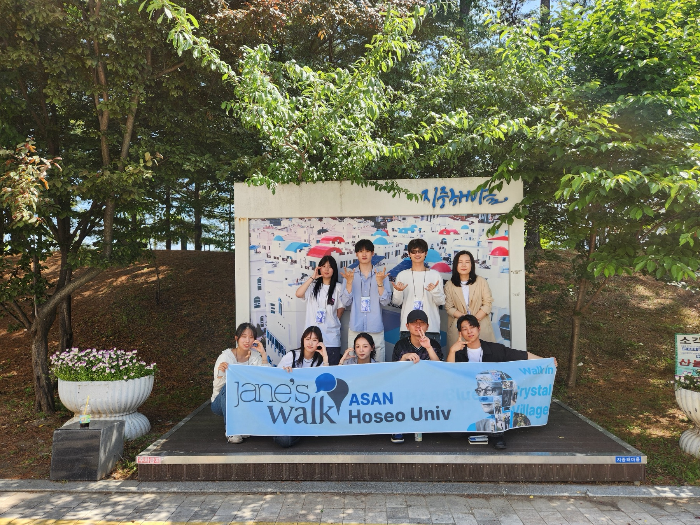
행복은 추상적이지만, 공간은 구체적입니다. 우리는 사람의 마음과 움직임을 깊이 관찰하여 공간이 어떻게 인간을 행복하게 만드는지 그 실질적 해답을 찾습니다.
Philosophy
Visualizing Happiness
행복은 추상적이지만, 공간은 구체적입니다. 인간의 심리와 행태를 깊이 있게 관찰하여 공간이 어떻게 인간을 행복하게 만드는지 그 실질적 해답을 찾습니다.
Inclusive Embrace
신경다양성을 가진 이들을 포함하여 디자인 사각지대에 놓인 이들이 소외받지 않도록, 모두를 위한 포용적 디자인(Inclusive Design)을 연구합니다.
Evidence-based Practice
현장에서의 실험과 테스트를 통해 디자인의 효용성을 확인하며, 누구나 일상에서 누릴 수 있는 지속가능한 행복의 터전을 제안합니다.
Strategic Pillars
관찰에서 시작해 검증을 거쳐 정책과 지역사회로 확산되는 네 개의 축으로 연구합니다.
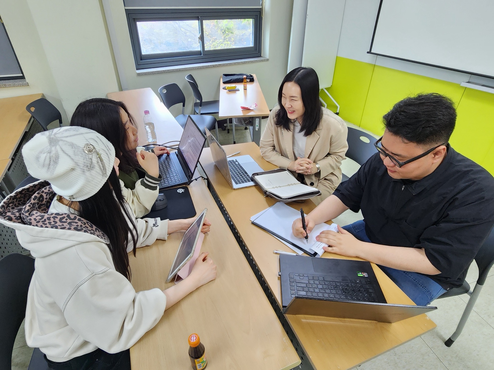
Behavioral Observation & Space Optimization
공간 안에서 일어나는 인간의 미세한 행태 변화와 환경심리를 분석합니다.
이를 바탕으로 공공공간이 사용자에게 정서적 안도감과 즐거움을 줄 수 있도록 디자인 특성을 최적화합니다.
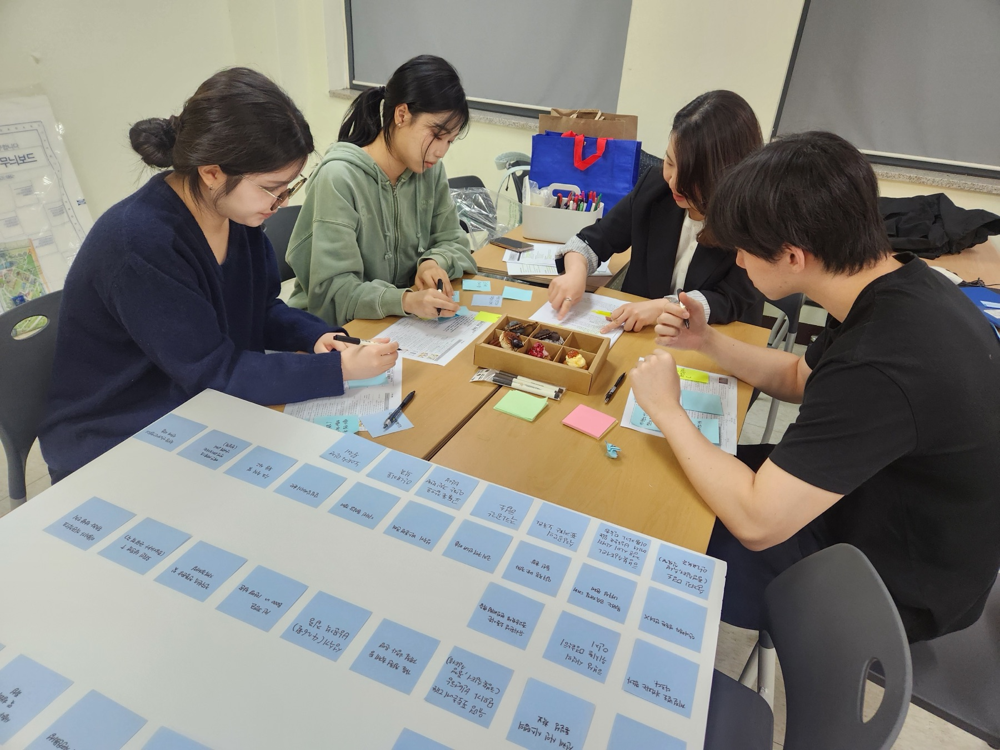
Universal Design for All
공공공간이 모든 사용자에게 유효한지 객관적으로 검토하고 개선안을 도출합니다.
육체적·인지적 제약이 장벽이 되지 않는 ‘포용적 공간’의 표준을 만들어갑니다.
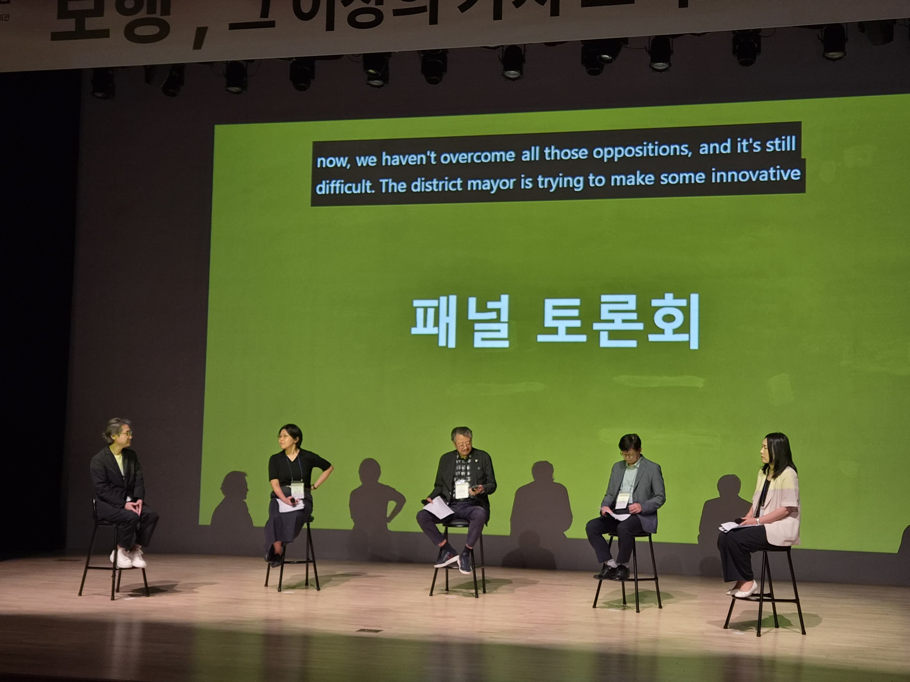
Social Empathy & Policy Diffusion
디자인이 사회 문제를 해결하고 공동체의 거버넌스를 강화하는 과정을 연구하며, 이를 정책적 가치로 연결합니다.
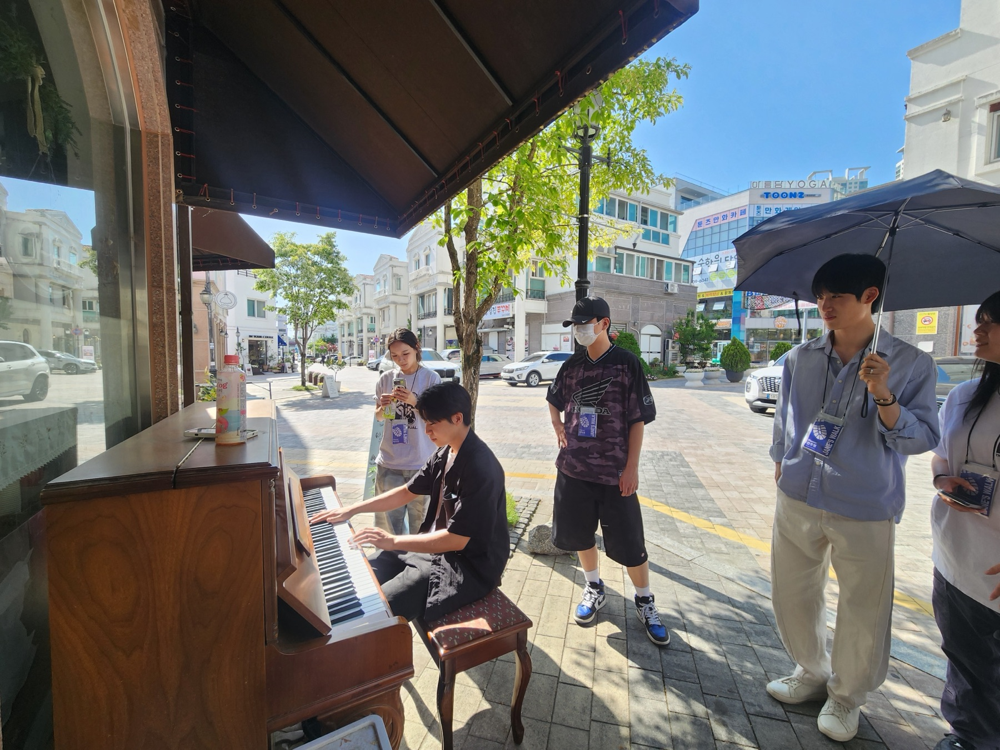
Placemaking & Urban Walk
‘제인스 워크(Jane’s Walk)’와 같은 도시 관찰 활동을 통해 지역사회의 숨겨진 장소성을 발견합니다.
주민들과 소통하며 디자인의 사회적 역할을 실천합니다.
Our Commitment
책상 위가 아닌 현장에서 사람의 마음과 움직임을 읽습니다.
실험과 근거를 통해 공간이 주는 행복의 가치를 증명합니다.
소수만을 위한 디자인이 아닌, 사회 사각지대를 해소하는 보편적 행복을 지향합니다.
사람의 마음을 읽는 연구와 현장의 근거를 담은 디자인으로, 우리 삶의 모든 공간에 일상적인 행복(Happy)을 채워 넣습니다.H.A.S. Design Lab
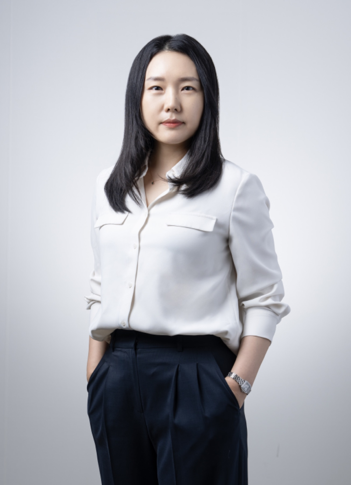
Principal Investigator
호서대학교 실내디자인학과 부교수 · 공간디자인 박사
Activities
도시 걷기, 워크숍, 답사와 포럼까지. H.A.S. Lab의 연구는 언제나 사람이 있는 곳에서 시작됩니다.
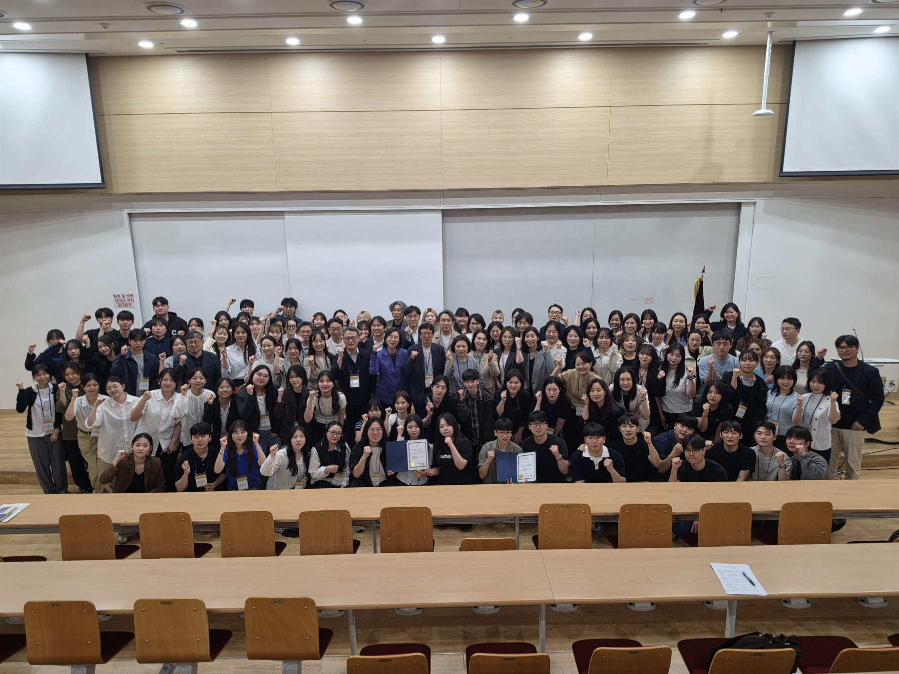
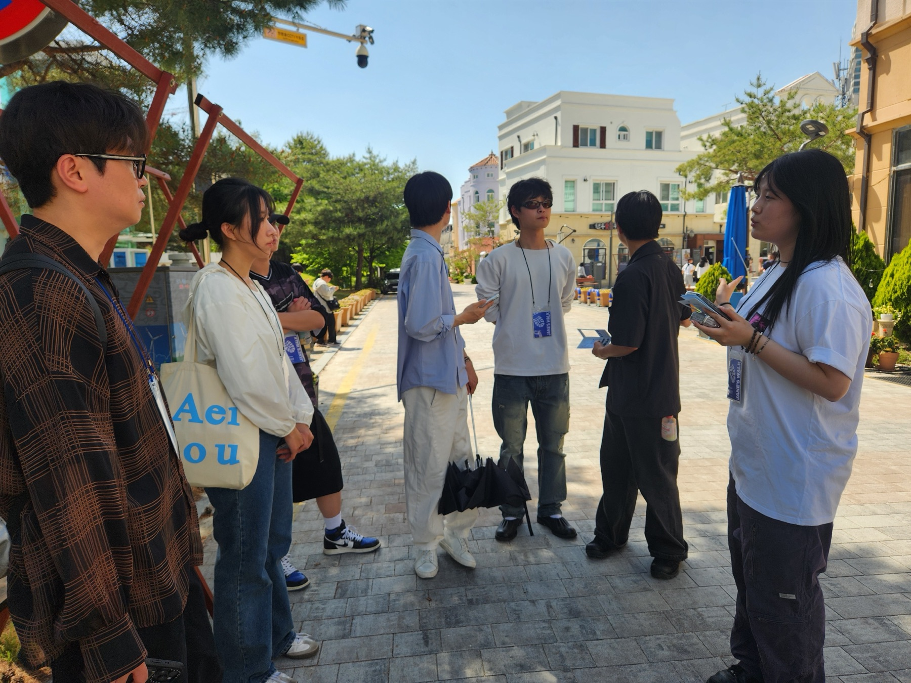
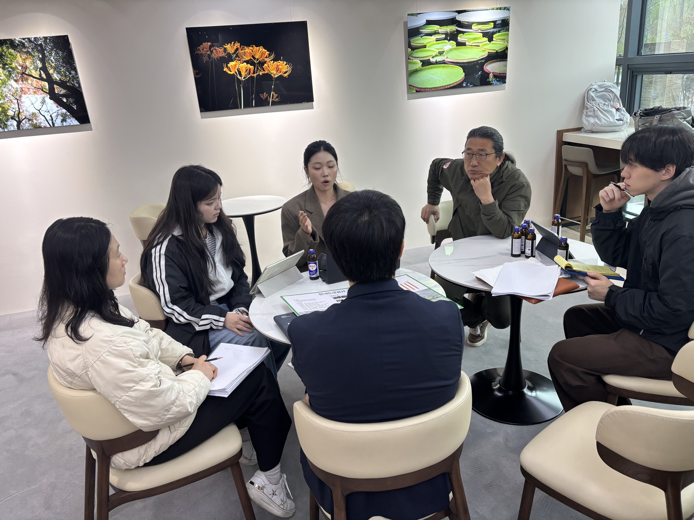
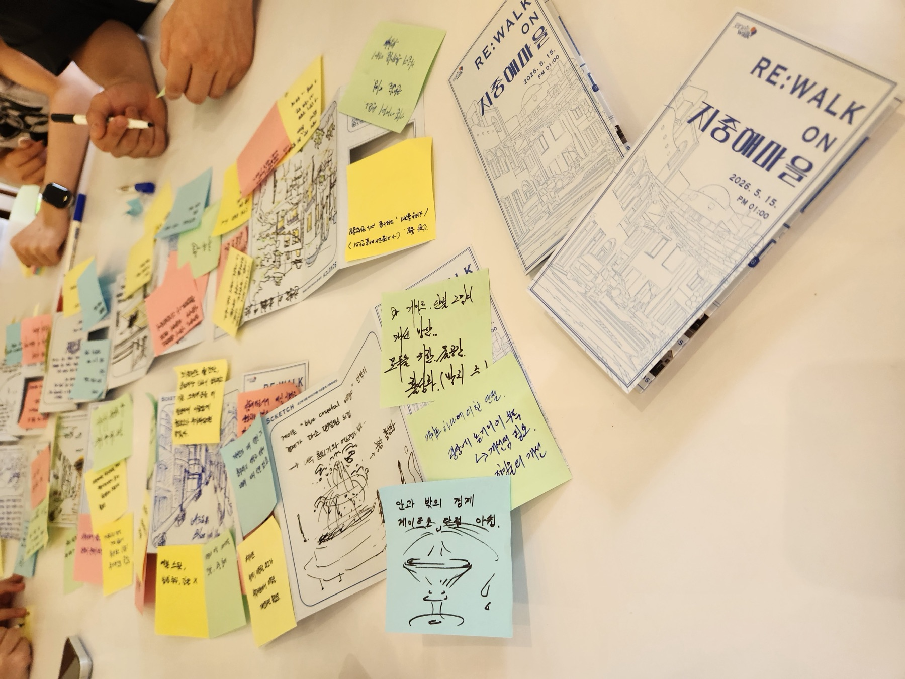
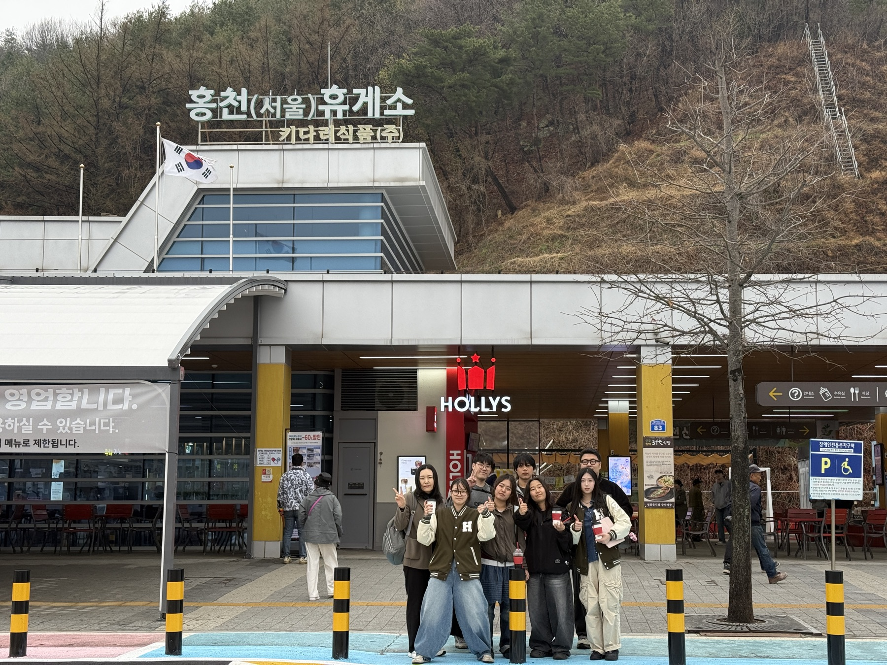
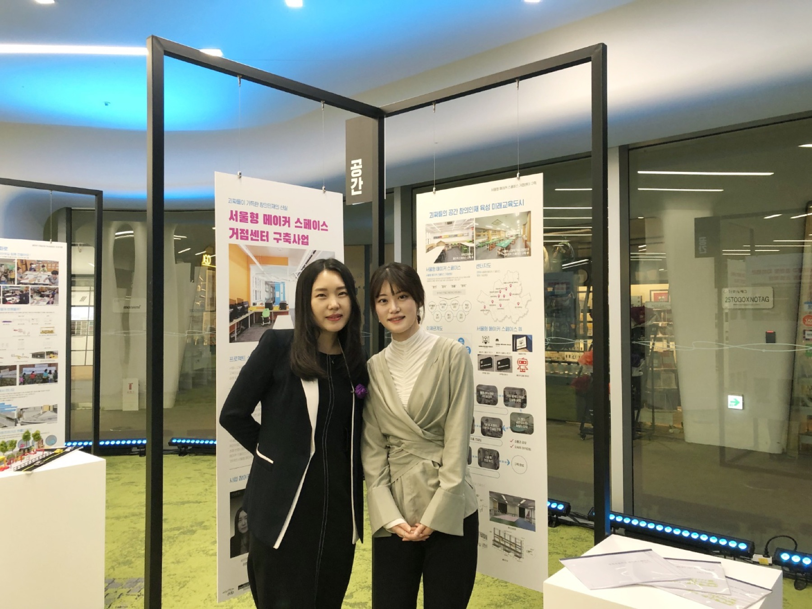
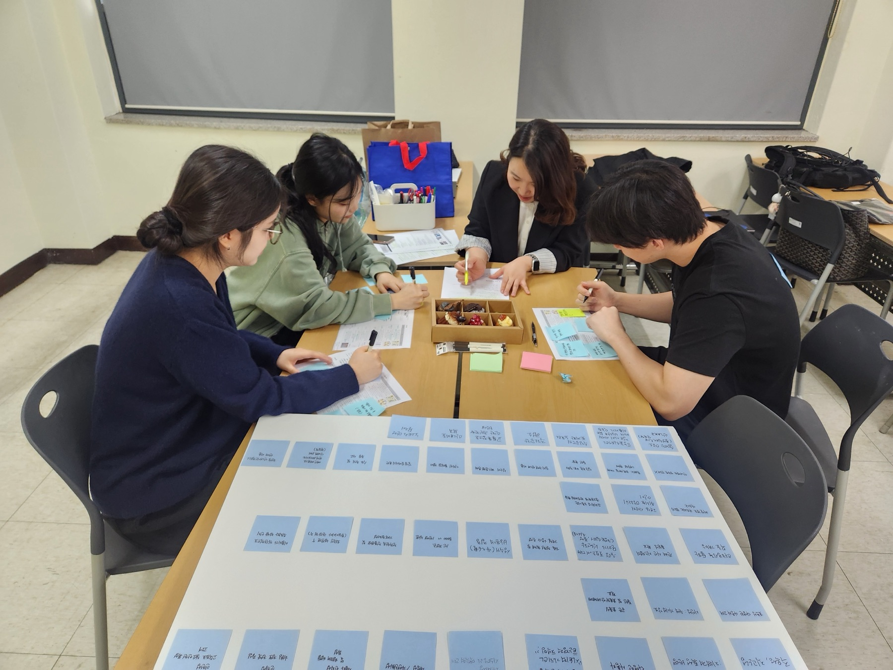